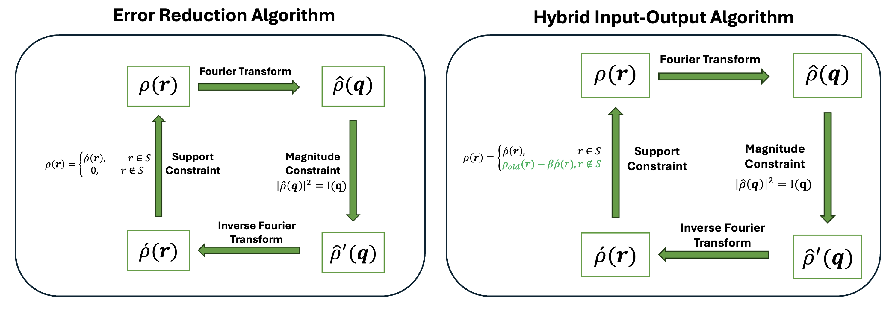

During my PhD I've made lots of videos trying to understand how optimization problems converge to their solutions, or how different hyperparameters of an algorithm shape the solution. This page collects some of those videos that I personally liked watching. Each video also has a brief introduction in case you want to learn more :)
The video above shows an image being formed from 200, 1,000, and 10,000 Gaussian blobs, each optimized for 50,000 iterations. The 200 little blobs are doing their best to represent the image :)
An image can be represented as sets of 2D Gaussians instead of an RGB value for each pixel. In this representation, each Gaussian is parameterized by a learnable center $(\mu x, \mu y)$, a covariance matrix $\Sigma$, and a learnable RGB color $c$. To be sure the covariance matrix is always positive semi-definite, it's built from just three learnable entries of a lower-triangular matrix $L$ rather than learned directly:
Rendering stays fast by never touching irrelevant pixels: each Gaussian's center and covariance are projected into pixel space and binned into the 16×16 image tiles its footprint overlaps, so only nearby Gaussians are evaluated at any given tile. Every pixel $p$ inside those tiles then accumulates a weighted contribution from each nearby Gaussian, peaking at the center and decaying outward:
Because the whole pipeline is differentiable, gradient descent optimizes every position, covariance, and color directly against a target image. This representation can also be used as a compact representation of the image: each Gaussian only needs 8 float32 parameters, versus a raw 512×512×3 uint8 tensor which takes 768 KB to store. 200 Gaussians need just 6.25 KB (a 99.2% reduction), 1,000 Gaussians need 31.25 KB (95.9% reduction), and 10,000 Gaussians need 312.5 KB (59.3% reduction) — the more Gaussians used, the closer the reconstruction gets to the original image, at the cost of a smaller compression gain.
The video above shows an image being reconstructed after 90% of its pixels were masked out. An implicit neural representation is overfit to only the remaining 10% of known pixels, then queried everywhere to fill in the missing regions. Each frame shows the reconstruction at a different training iteration, sharpening as training progresses. It's cool that just 10% of pixels can lead to a reasonable (not perfect btw) reconstruction of an image.
Instead of representing an image as an explicit grid of RGB values, one per pixel, an image can be represented as a function mapping a pixel coordinate to its corresponding RGB value:
This is called an implicit representation: the image isn't stored directly, only implied by a small neural network $f_\theta$ (an MLP) whose weights are optimized to reconstruct the target image. This gives a few useful properties. It's resolution-agnostic, since the function can be queried at any coordinate, so the same trained network can be sampled at a resolution higher than it was trained on. It's differentiable, so it can be optimized directly with gradient descent. And its size doesn't scale with resolution: a raw image tensor grows with width, height, and channels, while a tiny fixed-size network can represent images at many different resolutions.
For this video, $f_\theta$ is trained on only 10% of the image's pixels, chosen at random, while the other 90% stay hidden. Since $f_\theta$ is a continuous function it can be queried everywhere, including at the hidden pixels. The video shows this improving over training: early iterations give a blurry guess at the missing regions, and later iterations sharpen as the network learns finer detail. However,
The video above compares two classic iterative phase retrieval algorithms: Error Reduction (ER) and Hybrid Input Output (HIO), recovering a signal from only the magnitude of its Fourier transform. HIO's feedback loop outside the support helps it recover the image much better than ER.
Phase retrieval shows up in fields like X-ray crystallography, astronomical imaging, and microscopy, where detectors can measure intensity, and the phase information is lost. Phase retrieval algorithms recover a signal $\rho(r)$ when only the magnitude of its Fourier transform $\hat\rho(q)$ is measured. Both ER and HIO iterate the same basic loop: Fourier transform the current estimate, replace its magnitude with the measured one, inverse transform back to real space, and update the estimate there:
The two algorithms differ only in how they update the estimate in real space outside the known support $S$. Error Reduction simply sets it to zero:
Hybrid Input–Output instead feeds back a fraction of the previous estimate outside the support, which helps it escape the stagnation points ER tends to get stuck in:
